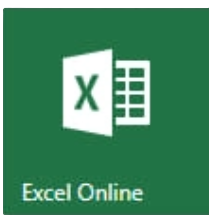

Você já deve ter ouvido falar em Pacote Office – e se está em busca de um emprego, provavelmente já encontrou “conhecimentos no Pacote Office” entre as exigências para uma determinada vaga. Mas você sabe o que é e quais as funções do Office? Nesse artigo, te contaremos mais sobre esse pacote tão importante e tão utilizado pelas empresas.
O que é o Pacote Office?
O Pacote Office é uma suíte de softwares, ou seja, um conjunto de programas de computador, que conta com ferramentas extremamente úteis para nosso dia a dia, principalmente em escritórios e empresas.
Esse conjunto inclui programas como o Word, o Excel, o Power Point e o Outlook, cada um com suas funções específicas, como tabelas, planilhas, edição de textos e apresentações.
Agora que você já sabe o que é o Pacote Office, que tal conhecer um pouco mais sobre as funções de cada programa da suíte?